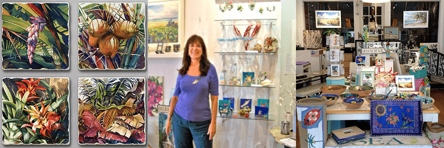

About Lois
During a vacation to the Cayman Islands in 1990, Lois discovered a love of the tropics and began painting the brilliant colors and light that fascinated her. Soon, her textile business evolved blissfully into a life of painting in Grand Cayman. Several galleries in Grand Cayman represent Lois’s work and her business, Cayman Colors, thrives selling reproductions of her art to over 20 major gift shops and hotels. The National Gallery of the Cayman Islands includes Lois’s work in their permanent collection and the Ritz Carlton Grand Cayman commissioned five watercolors for their lobby.
PI Fine Art of Toronto publishes over twenty of her paintings and these prints can be seen throughout the Caribbean, Europe, and the Bahamian and Trinidad US Embassies, Marriott Hotels, the Atlantis condominium in the Bahamas and recently in Home Goods stores in South Florida.
In 2011, Lois was commissioned to paint an original watercolor of the Breakers Hotel. Over 80 newly renovated rooms at the Breakers feature this painting along with other prints by the artist.
Lois currently resides in Delray Beach “The Historic Homes of Delray Beach” calendars of 2005 and 2006 featured her original watercolors of historic homes which led to a deep respect for the unique architecture of old Florida. She was a founding member of the Delray Beach Preservation Trust which is dedicated to preserving the architectural integrity of older neighborhoods.
The Gallery Store at the historic Colony Hotel is a perfect fit for Lois’s tropical art, and Delray Beach watercolors. She has the opportunity to show work of the artists she has known over the years, and to feature her Delray Beach images on gift item. The result is a colorful, bright and playful place to shop.